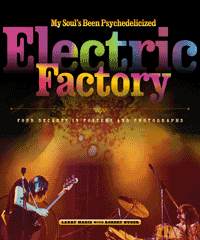

<body bgcolor="#FFFFFF" text="#000000" link="#0000FF" vlink="#CC0000" alink="#CC0000"><center><hr width="350" size="1" align="center" noshade>Philadelphia's popular music scene and the concert promoters who shaped it for more than forty years<hr width="350" size="1" align="center" noshade><p><a href="https://cdcshoppingcart.uchicago.edu/Cart/ChicagoBook.aspx?ISBN=9781439901809&&PRESS=temple" target="_top">Buy this book!</a> | <a href="https://cdcshoppingcart.uchicago.edu/Cart/Cart.aspx?PRESS=temple" target="_top">View Cart</a> | <a href="https://cdcshoppingcart.uchicago.edu/Cart/Cart.aspx?PRESS=temple" target="_top">Check Out</a></p><p></p></center><!--none//--><h1>My Soul's Been Psychedelicized</h1>
<H2>Electric Factory: Four Decades in Posters and Photographs</H2>
<h3>Larry Magid with Robert Huber </h3>
<P>cloth 1-4399-0180-5 $44.50, Apr 11, <FONT COLOR=#990033>Available</FONT>
<BR> 200 pp
10x12
250&nbsp;color&nbsp;illustrations
</P><BLOCKQUOTE><I><em>"An entertaining new book...[a] large-format profusely illustrated trip down memory lane."</em>
<BR>&mdash;<b>The Philadelphia Daily News</b></I></BLOCKQUOTE>
<p>On February 2, 1968, the Electric Factory, Philadelphia's first major venue for the era's new music, opened with a show featuring the Chambers Brothers. Performing their neosoul and gospel sounds in a warm and inviting venue, they declared, "My soul's been psychedelicized!"-a feeling that the Factory's cofounder, Larry Magid, has been experiencing ever since.</p>
<p>In <em>My Soul's Been Psychedelicized</em>, Magid presents a spectacular photographic history of the bands and solo acts that have performed at the Electric Factory and at other venues in Factory-produced concerts over the past four decades. The book includes concert posters, photographs, and promotional items featuring both rising stars and established performers, such as Pink Floyd, Jimi Hendrix, Bob Dylan, Bruce Springsteen, Bette Midler, Elvis Presley, Tina Turner, Pearl Jam and many, many more.</p>
<p>The images—candid and celebratory—create a one-of-a-kind history of rock and roll, from the wild 1960s to the Live Aid concert in 1985 and the closing of the Philadelphia Spectrum in 2009. Magid's vivid recollections constitute a who's who of pop music and culture. As one of the great concert producers, he shares his unique perspective on the business, talking about how it has changed and how lasting careers have been carefully developed.</p>
<p>For anyone who has ever attended a concert at the Electric Factory—or for anyone who missed a show—<em>My Soul's Been Psychedelicized</em> will bring back great memories of the music and the musicians.</p>
<BR>&nbsp;<h2>Reviews</h2>
<p><i>"Music buff and music historian alike will find a lot to be intrigued about with the coffee-table book dedicated to one of Philadelphia’s premier music venues and the concert promotion company that shares its name.... This gorgeous, colorful and glossy book is chock full of concert posters, live photos and stories about some of the more legendary shows through the years.... [T]his book makes a great addition to any music lover’s library.... [I]t is wonderful to read about and see pictures of the first time Jimi Hendrix, Janis Joplin, Elton John and Pink Floyd played the modest-sized club/theater in Philadelphia on the way to super-stardom.... [A]n entertaining read and a nice slab of visual music history."</i><br> &#151<b><i>Philadelphia Gay News</i></b>
<p><i>"[A]n entertaining and informative recap of Magid's career....</i>My Soul's Been Psychedelicized<i> offers a treasure trove of more than 200 photographs and concert posters, ranging from a youthful Pete Townshend performing “Tommy” in 1969 to Pearl Jam closing the Spectrum in 2009. This book is a journey through the past worth taking." </i><br> &#151<b><i>The Golden Times</i></b>
<BR>&nbsp;<P><p>An interview clip from Larry Magid's Free Library of Philadelphia event was featured on <I><a href="http://philadelphia.cbslocal.com/2011/06/23/philadelphia-music-moguls-psychadelic-trip-down-memory-lane/" target="new">KYW radio</a></I> on June 23.
</p>
<p>Larry Magid was profiled in <I><a href="http://www.philly.com/philly/entertainment/20110705_Making_Philly_Electric.html" target="new">The Philadelphia Inquirer</a></I> on July 5.
</p></P><BR>&nbsp;<br>
<H2>About the Author(s)</H2>
<P><strong>Larry Magid</strong> cofounded the Electric Factory in 1968.</P>
<P>The articles, essays, and short stories of <strong>Robert Huber</strong>, features editor of <i>Philadelphia</i> magazine, have appeared in <i>Esquire</i>, <i>GQ</i>, <i>Details</i>, <i>South Carolina Review</i>, and many other publications. He is coauthor of <i>Forever Young</i> and coeditor of <i>The Philadelphia Reader</i> (Temple).</P>
<BR><H2>Subject Categories</H2>
<p><A HREF="/tempress/philly.html" TARGET="_top">Philadelphia Region</a>
<BR><A HREF="/tempress/music.html" TARGET="_top">Music and Dance</a>
<BR><A HREF="/tempress/general.html" TARGET="_top">General Interest</a>
</p>
<p align="center"><a href="https://cdcshoppingcart.uchicago.edu/Cart/ChicagoBook.aspx?ISBN=9781439901809&&PRESS=temple" target="_top">Buy this book!</a> | <a href="https://cdcshoppingcart.uchicago.edu/Cart/Cart.aspx?PRESS=temple" target="_top">View Cart</a> | <a href="https://cdcshoppingcart.uchicago.edu/Cart/Cart.aspx?PRESS=temple" target="_top">Check Out</a></p><p><font face="Arial" size="1"><a href="copyright.html" onMouseOver="window.status='Web Copyright Policy';return true;" onMouseOut="window.status=''" title="Web Copyright Policy">&copy;</a> 2015 <a href="http://www.temple.edu" target="new" onMouseOver="window.status='Link to Temple University home page';return true;" onMouseOut="window.status=''" title="Link to Temple University home page">Temple University</a>. All Rights Reserved. http://www.temple.edu/tempress/titles/2064_reg.html</font></p>